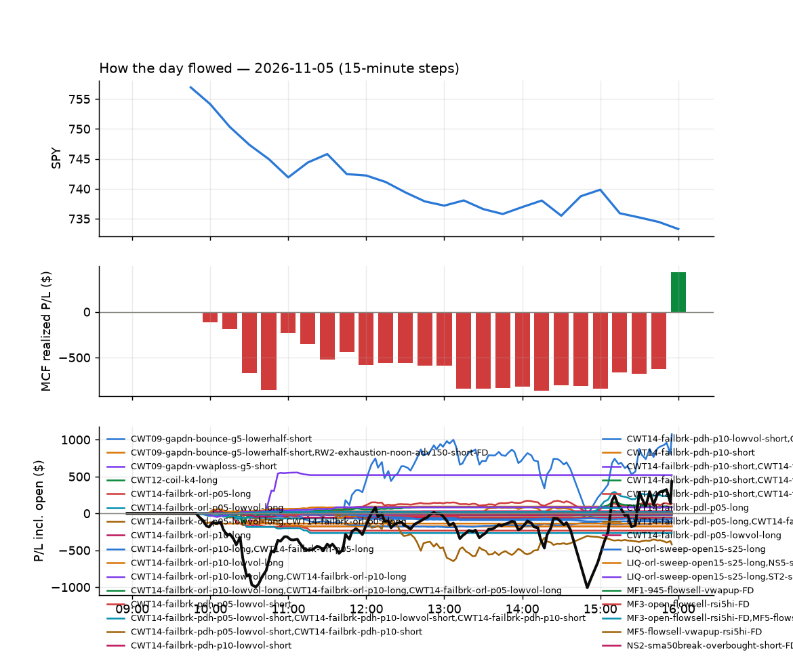
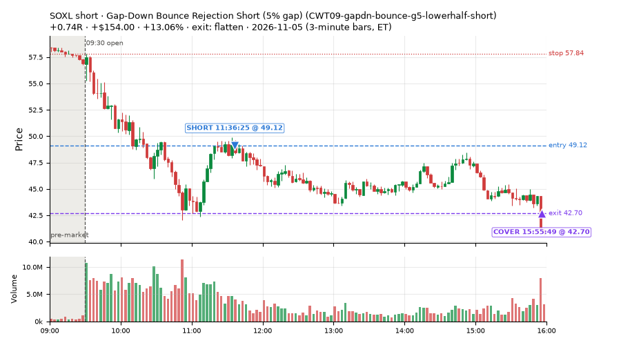
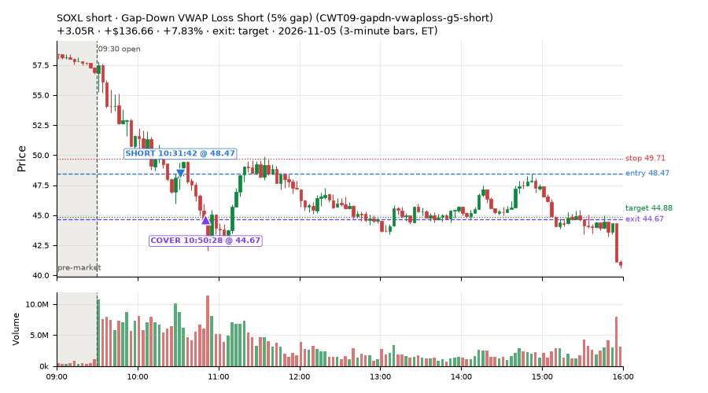
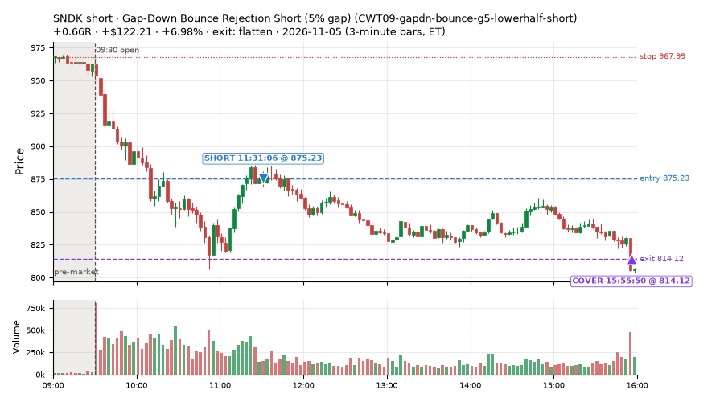
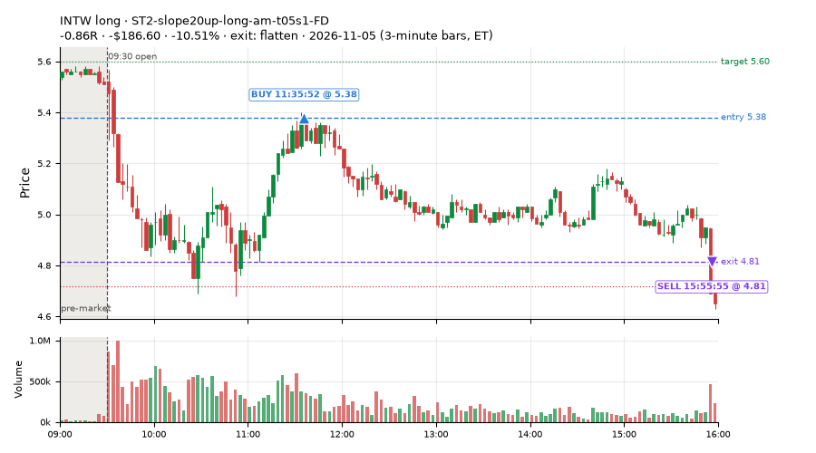
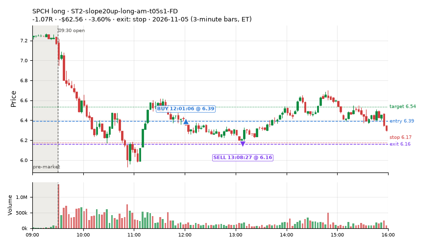
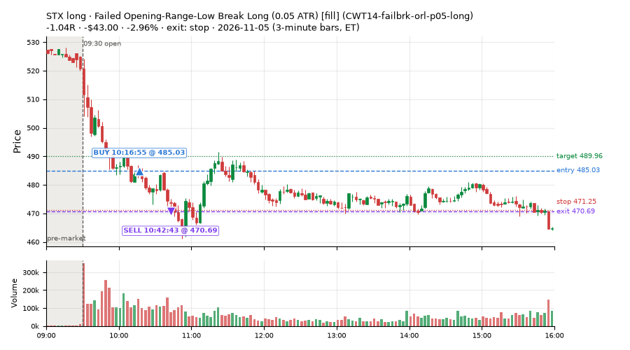
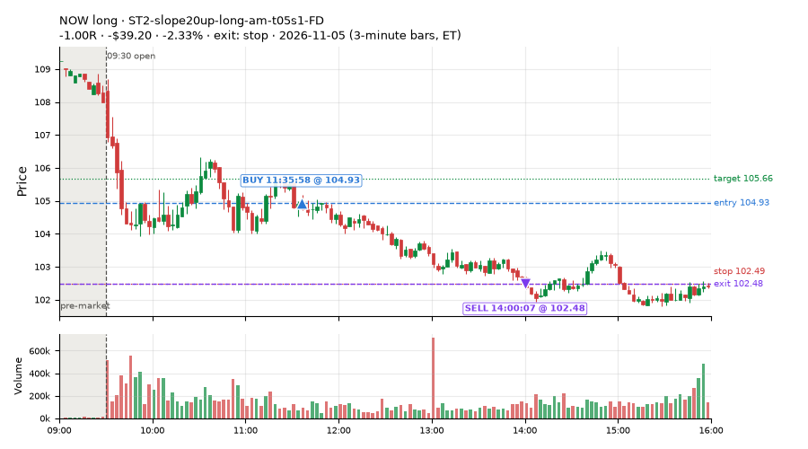
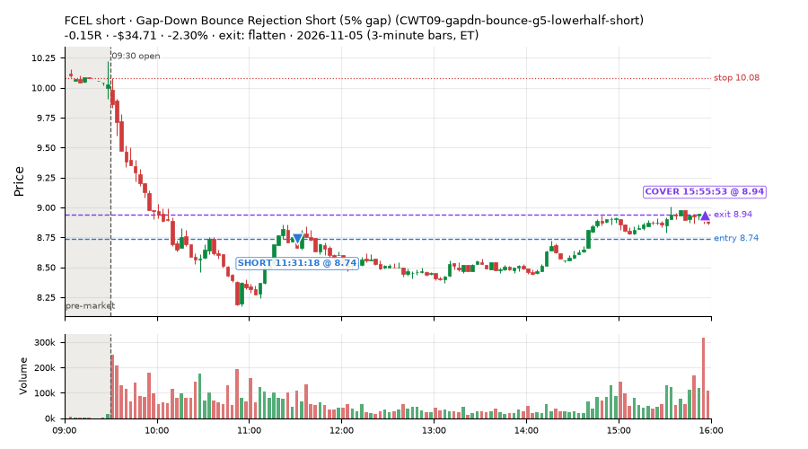

344 trades · win rate 47% · P/L $432.67
PROBATION: no live setup has passed both locked test periods. 10 owner-directed setups added 2026-10-08 (MarcoFlow top 5 + 5 new), untested live. RW6G1 (RW6 + VWAP band guard) added 2026-10-09, probation.

| Symbol | Setup | Side | In | Out | Entry | Exit | Exit reason | % gained | P/L |
|---|---|---|---|---|---|---|---|---|---|
| SOXL | Gap-Down Bounce Rejection Short (5% gap) (CWT09-gapdn-bounce-g5-lowerhalf-short) | short | 11:36 | 15:55 | 49.12 | 42.70 | flatten | +13.06% | $154.00 |
| SOXL | Gap-Down VWAP Loss Short (5% gap) (CWT09-gapdn-vwaploss-g5-short) | short | 10:31 | 10:50 | 48.47 | 44.67 | target | +7.83% | $136.66 |
| SNDK | Gap-Down Bounce Rejection Short (5% gap) (CWT09-gapdn-bounce-g5-lowerhalf-short) | short | 11:31 | 15:55 | 875.23 | 814.12 | flatten | +6.98% | $122.21 |
| Symbol | Setup | Side | In | Out | Entry | Exit | Exit reason | % lost | P/L |
|---|---|---|---|---|---|---|---|---|---|
| INTW | ST2-slope20up-long-am-t05s1-FD | long | 11:35 | 15:55 | 5.38 | 4.81 | flatten | -10.51% | $-186.60 |
| SPCH | ST2-slope20up-long-am-t05s1-FD | long | 12:01 | 13:08 | 6.39 | 6.16 | stop | -3.60% | $-62.56 |
| STX | CWT14-failbrk-orl-p05-long | long | 10:16 | 10:42 | 485.03 | 470.69 | stop | -2.96% | $-43.00 |
| NOW | ST2-slope20up-long-am-t05s1-FD | long | 11:35 | 14:00 | 104.93 | 102.48 | stop | -2.33% | $-39.20 |
| FCEL | CWT09-gapdn-bounce-g5-lowerhalf-short | short | 11:31 | 15:55 | 8.74 | 8.94 | flatten | -2.30% | $-34.71 |








Signal to fill: median 2s, 90th percentile 6s (344 trades). Bars close each minute; the order follows the bar close.
Best excursion (MFE): median 0.46R; worst (MAE) median 0.97R. 27% of trades never got +0.25R in our favour; 18 reached +1R and still closed at or below 0.
| Symbol | Setup | Best R | Worst R | Closed R |
|---|---|---|---|---|
| TTMI | CWT09-gapdn-vwaploss-g5-short | +3.67 | -2.15 | -2.15 |
| FIX | CWT09-gapdn-vwaploss-g5-short | +2.52 | -1.46 | -1.07 |
| STM | CWT14-failbrk-orl-p05-long | +2.46 | -1.12 | -1.05 |
| STM | CWT14-failbrk-orl-p05-lowvol-long | +2.46 | -1.12 | -0.99 |
| WMT | CWT14-failbrk-pdh-p10-short | +1.51 | -2.11 | -1.45 |
| Entry time | Trades | Win | Avg R | P/L |
|---|---|---|---|---|
| 09:50-10:30 | 175 | 39% | -0.42 | $-855.24 |
| 10:30-11:30 | 65 | 51% | +0.26 | $388.42 |
| 11:30-13:00 | 57 | 49% | -0.16 | $489.55 |
| 13:00-14:00 | 7 | 57% | +0.08 | $-0.01 |
| 14:00-16:00 | 40 | 75% | +0.38 | $409.95 |
| Setup | Trades | Win | Avg R | Adj R (net of SPY) | Avg R ex-market (all sessions) | P/L |
|---|---|---|---|---|---|---|
| Gap-Down Bounce Rejection Short (5% gap) (CWT09-gapdn-bounce-g5-lowerhalf-short) | 21.0 | 90% | +0.42 | +0.27 | -0.12 (beta -1.03, n 99) | $1,073.76 |
| Gap-Down VWAP Loss Short (5% gap) (CWT09-gapdn-vwaploss-g5-short) | 24.0 | 58% | +1.21 | +0.48 | -0.21 (beta -3.10, n 70) | $519.88 |
| Coil Under the High (4 bars) (CWT12-coil-k4-long) | 2.0 | 0% | -0.87 | +0.49 | -0.00 (beta +0.99, n 202) | $-26.38 |
| Failed Opening-Range-Low Break Long (0.05 ATR) [fill] (CWT14-failbrk-orl-p05-long) | 19.0 | 16% | -0.83 | -0.35 | -0.15 (beta +0.97, n 523) | $-233.64 |
| Failed Opening-Range-Low Break Long (0.05 ATR, low volume) [fill] (CWT14-failbrk-orl-p05-lowvol-long) | 27.0 | 19% | -0.77 | -0.13 | -0.12 (beta +0.81, n 438) | $-266.48 |
| Failed Opening-Range-Low Break Long (0.1 ATR) [fill] (CWT14-failbrk-orl-p10-long) | 21.0 | 14% | -0.75 | +0.01 | -0.13 (beta +0.94, n 286) | $-173.94 |
| Failed Opening-Range-Low Break Long (low volume) (CWT14-failbrk-orl-p10-lowvol-long) | 17.0 | 12% | -0.85 | +0.03 | -0.05 (beta +0.89, n 319) | $-175.33 |
| Failed Prior-Day-High Break Short (0.05 ATR, low volume) [fill] (CWT14-failbrk-pdh-p05-lowvol-short) | 15.0 | 73% | +0.13 | -0.61 | -0.15 (beta -1.33, n 200) | $29.03 |
| Failed Prior-Day-High Break Short (low volume) (CWT14-failbrk-pdh-p10-lowvol-short) | 10.0 | 70% | -0.07 | -0.61 | -0.16 (beta -1.14, n 110) | $20.45 |
| Failed Prior-Day-High Break Short (0.1 ATR) [fill] (CWT14-failbrk-pdh-p10-short) | 38.0 | 82% | +0.12 | -0.23 | -0.17 (beta -1.29, n 216) | $93.48 |
| Failed Prior-Day-Low Break Long (shallow) (CWT14-failbrk-pdl-p05-long) | 7.0 | 29% | -0.69 | +0.43 | -0.11 (beta +0.93, n 124) | $-68.54 |
| Failed Prior-Day-Low Break Long (0.05 ATR, low volume) [fill] (CWT14-failbrk-pdl-p05-lowvol-long) | 4.0 | 0% | -1.08 | +0.39 | -0.13 (beta +1.06, n 82) | $-56.12 |
| Opening-Range Low Sweep Reversal (LIQ-orl-sweep-open15-s25-long) | 10.0 | 10% | -0.79 | -1.01 | -0.12 (beta -0.13, n 142) | $-116.93 |
| MF1-945-flowsell-vwapup-FD | 2.0 | 50% | -0.20 | +0.01 | +0.02 (beta -2.60, n 54) | $20.86 |
| Early Sellers into a Pop (all day) (MF3-open-flowsell-rsi5hi-FD) | 16.0 | 75% | +0.47 | +0.09 | +0.05 (beta -1.39, n 39) | $133.60 |
| MF5-flowsell-vwapup-rsi5hi-FD | 1.0 | 100% | +1.03 | +0.53 | +0.27 (beta -3.07, n 15) | $18.34 |
| NS2-sma50break-overbought-short-FD | 1.0 | 100% | +0.72 | +0.56 | -0.09 (beta -0.83, n 71) | $29.16 |
| Big Loser VWAP Reclaim Fade (all day) (NS3-failed-vwap-reclaim-short-FD) | 8.0 | 12% | -0.83 | -1.57 | -0.75 (beta -0.30, n 14) | $-107.04 |
| NS5-sma50-flush-oversold-long-FD | 2.0 | 0% | -1.01 | +0.08 | -0.26 (beta +1.35, n 5) | $-19.15 |
| RW2-exhaustion-noon-adv150-short-FD | 13.0 | 69% | +0.38 | +0.13 | -0.38 (beta -1.12, n 237) | $83.44 |
| RW4-ns3-adv150-short-FD | 4.0 | 0% | -1.04 | -1.86 | -0.26 (beta +0.21, n 26) | $-67.34 |
| ST1-ordn-long-pm-t05s1-FD | 4.0 | 75% | +0.05 | -0.09 | -0.33 (beta +1.44, n 18) | $17.58 |
| ST2-slope20up-long-am-t05s1-FD | 26.0 | 31% | -0.57 | -0.19 | +0.02 (beta +1.06, n 152) | $-419.36 |
| ST4-emadn-long-am-t1s05-FD | 3.0 | 33% | -0.30 | +0.10 | +0.69 (beta +2.53, n 8) | $-7.97 |
| Midday Gap-Up Dip Buy (heat_fade_long) failed Apr-Jun holdout: -0.138R/trade over 1043 trades | 6.0 | 0% | -0.92 | -0.29 | +0.10 (beta +1.72, n 64) | $-76.65 |
| heat_fade_long-FD | 7.0 | 0% | -1.03 | -0.78 | -0.22 (beta +1.44, n 83) | $-137.43 |
| Morning Bounce Fade (heat_fade_short) failed Apr-Jun holdout: -0.015R/trade over 1420 trades | 13.0 | 69% | +0.40 | -0.98 | -0.29 (beta -0.99, n 132) | $83.07 |
| heat_fade_short-FD | 23.0 | 83% | +0.62 | -0.02 | -0.23 (beta -1.64, n 272) | $262.32 |
Market direction (SPY, beta 1) accounted for $436.76 of today's $432.67; the rest ($-4.09) came from the setups themselves. Avg R net of SPY: -0.18 (incl. a hedge leg's cost; report only).
33 setups live today. Today: 2155 signals, 344 taken, 42 lost because another setup held the symbol (2%). Since 2026-10-21 (12 sessions): 12193 signals, 4215 taken, 569 lost to other setups (5%). Peak open positions today 104 of 200 slots. Earnings blackout removed 1502 symbols before scanning.
Simulated playing time (not live): 7939 what-if trades of signals not taken, avg -0.08R, 54% winners; of them 568 lost to another setup (avg -0.12R).
Crowded out: NS2-sma50break-overbought-short · Starved: MF1-945-flowsell-vwapup-FD, heat_fade_long, heat_fade_long-FD, heat_fade_short-FD, NS3-failed-vwap-reclaim-short-FD
| Prio | Setup | Today sig / taken | Sessions | Signals / taken / trades | Taken/day | Expected/day | Lost to other setups | Lost to (setup n) | Top skip reasons | SIMULATED: not-taken n / avg R / win | Verdict |
|---|---|---|---|---|---|---|---|---|---|---|---|
| 1 | ST1-ordn-long-pm-t05s1-FD ST1-ordn-long-pm-t05s1-FD | 4 / 4 | 12 | 26 / 18 / 18 | 1.50 | 3.49 | 0 | – | spread / quote / size 7, broker rejected 1 | 8 / -0.39R / 25% | slow 7.5 entries/week; ~8 weeks to 60 trades |
| 2 | Big Gainer SMA50 Cross Fade (all day) RW6-ns2-up3-short-FD | 1 / 0 | 12 | 72 / 30 / 30 | 2.50 | 7.12 | 6 | CWT12-coil-k4-long 3, LIQ-orl-sweep-open15-s25-long 2, CWT09-gapdn-bounce-g5-lowerhalf-short 1 | not shortable / shorts off 22, daily loss cap 9, symbol held by another setup 6 | 42 / +0.50R / 83% | slow 12.5 entries/week; ~5 weeks to 60 trades |
| 3 | NS2-sma50break-overbought-short-FD NS2-sma50break-overbought-short-FD | 4 / 1 | 12 | 138 / 71 / 71 | 5.92 | 17.08 | 7 | CWT12-coil-k4-long 6, LIQ-orl-sweep-open15-s25-long 1 | not shortable / shorts off 25, daily loss cap 19, spread / quote / size 16 | 67 / +0.32R / 70% | ok 29.6 entries/week |
| 4 | Big Gainer Average Reclaim Fade NS2-sma50break-overbought-short | 0 / 0 | 12 | 63 / 6 / 6 | 0.50 | 5.74 | 38 | NS2-sma50break-overbought-short-FD 33, RW6-ns2-up3-short-FD 9, CWT12-coil-k4-long 4 | symbol held by another setup 38, spread / quote / size 10, not shortable / shorts off 9 | 57 / +0.20R / 65% | crowded-out 38 of 63 signals (60%) lost to setups already holding the symbol |
| 5 | MF1-945-flowsell-vwapup-FD MF1-945-flowsell-vwapup-FD | 6 / 2 | 12 | 148 / 54 / 54 | 4.50 | 23.94 | 2 | CWT12-coil-k6-long 1, CWT14-failbrk-orl-p05-long 1 | daily loss cap 45, spread / quote / size 35, not shortable / shorts off 12 | 94 / -0.01R / 40% | starved 4.50 entries/day vs ~23.94 expected |
| 6 | ST2-slope20up-long-am-t05s1-FD ST2-slope20up-long-am-t05s1-FD | 261 / 26 | 12 | 448 / 152 / 152 | 12.67 | 24.03 | 20 | heat_fade_short-FD 10, CWT09-gapdn-bounce-g5-lowerhalf-short 5, MF3-open-flowsell-rsi5hi-FD 2 | daily loss cap 197, spread / quote / size 38, per-setup cap 37 | 293 / -0.08R / 60% | ok 63.3 entries/week |
| 7 | Midday Gap-Up Dip Buy heat_fade_long | 18 / 6 | 12 | 110 / 64 / 64 | 5.33 | 30.36 | 12 | heat_fade_long-FD 7, heat_fade_short-FD 2, heat_fade_short 2 | spread / quote / size 19, daily loss cap 15, symbol held by another setup 12 | 46 / -0.41R / 33% | starved 5.33 entries/day vs ~30.36 expected |
| 8 | Opening-Range Low Sweep Reversal LIQ-orl-sweep-open15-s25-long | 49 / 10 | 12 | 281 / 142 / 142 | 11.83 | – | 11 | CWT14-failbrk-orl-p10-long 9, CWT14-failbrk-orl-p05-lowvol-long 9, CWT14-failbrk-orl-p10-lowvol-long 8 | per-setup cap 57, daily loss cap 43, spread / quote / size 23 | 139 / -0.06R / 42% | ok 59.2 entries/week |
| 9 | RW2-exhaustion-noon-adv150-short-FD RW2-exhaustion-noon-adv150-short-FD | 26 / 13 | 12 | 551 / 237 / 237 | 19.75 | 50.34 | 12 | CWT12-coil-k4-long 5, CWT12-coil-k6-long 3, LIQ-orl-sweep-open15-s25-long 2 | daily loss cap 152, not shortable / shorts off 66, spread / quote / size 53 | 314 / -0.10R / 48% | ok 98.8 entries/week |
| 10 | heat_fade_long-FD heat_fade_long-FD | 45 / 7 | 12 | 241 / 83 / 83 | 6.92 | 51.74 | 44 | heat_fade_long 39, heat_fade_short-FD 2, heat_fade_short 2 | daily loss cap 70, symbol held by another setup 44, spread / quote / size 44 | 158 / -0.32R / 34% | starved 6.92 entries/day vs ~51.74 expected |
| 11 | Failed Opening-Range-Low Break Long (low volume) CWT14-failbrk-orl-p10-lowvol-long | 103 / 17 | 12 | 591 / 319 / 319 | 26.58 | – | 7 | CWT14-failbrk-pdh-p05-lowvol-short 4, CWT14-failbrk-orl-p05-long 2, CWT14-failbrk-pdh-p10-short 2 | daily loss cap 138, spread / quote / size 104, per-setup cap 17 | 268 / -0.13R / 56% | ok 132.9 entries/week |
| 12 | Failed Opening-Range-Low Break Long (0.1 ATR) [fill] CWT14-failbrk-orl-p10-long | 106 / 21 | 12 | 703 / 286 / 286 | 23.83 | – | 11 | CWT14-failbrk-orl-p05-lowvol-long 7, CWT14-failbrk-orl-p05-long 7, CWT14-failbrk-orl-p10-lowvol-long 7 | daily loss cap 273, spread / quote / size 92, per-setup cap 32 | 412 / -0.14R / 59% | ok 119.2 entries/week |
| 13 | Morning Bounce Fade heat_fade_short | 25 / 13 | 12 | 256 / 132 / 132 | 11.00 | 31.76 | 0 | – | spread / quote / size 77, daily loss cap 33, not shortable / shorts off 12 | 124 / +0.09R / 53% | ok 55.0 entries/week |
| 14 | Failed Opening-Range-Low Break Long (0.05 ATR, low volume) [fill] CWT14-failbrk-orl-p05-lowvol-long | 216 / 27 | 12 | 1308 / 438 / 438 | 36.50 | – | 16 | CWT14-failbrk-orl-p10-lowvol-long 6, CWT14-failbrk-orl-p10-long 5, CWT14-failbrk-orl-p05-long 4 | daily loss cap 567, per-setup cap 138, spread / quote / size 136 | 865 / -0.14R / 58% | ok 182.5 entries/week |
| 15 | heat_fade_short-FD heat_fade_short-FD | 54 / 23 | 12 | 769 / 272 / 272 | 22.67 | 173.78 | 176 | heat_fade_short 133, LIQ-orl-sweep-open15-s25-long 14, CWT14-failbrk-orl-p05-long 9 | symbol held by another setup 176, daily loss cap 145, spread / quote / size 118 | 497 / +0.04R / 53% | starved 22.67 entries/day vs ~173.78 expected |
| 16 | Failed Opening-Range-Low Break Long (0.05 ATR) [fill] CWT14-failbrk-orl-p05-long | 262 / 19 | 12 | 1797 / 523 / 523 | 43.58 | – | 120 | CWT14-failbrk-orl-p10-lowvol-long 99, CWT14-failbrk-orl-p10-long 98, CWT14-failbrk-orl-p05-lowvol-long 96 | daily loss cap 736, spread / quote / size 202, per-setup cap 199 | 1269 / -0.15R / 57% | ok 217.9 entries/week |
| 17 | Gap-Down Bounce Rejection Short (5% gap) CWT09-gapdn-bounce-g5-lowerhalf-short | 108 / 21 | 12 | 520 / 99 / 99 | 8.25 | – | 4 | CWT12-coil-k4-long 3, CWT12-coil-k6-long 1, CWT14-failbrk-orl-p05-long 1 | not shortable / shorts off 313, spread / quote / size 51, per-setup cap 32 | 419 / +0.29R / 61% | ok 41.2 entries/week |
| 18 | Failed Prior-Day-High Break Short (0.05 ATR, low volume) [fill] CWT14-failbrk-pdh-p05-lowvol-short | 71 / 15 | 11 | 642 / 200 / 200 | 18.18 | – | 7 | CWT14-failbrk-orl-p10-long 4, CWT14-failbrk-orl-p10-lowvol-long 3, CWT14-failbrk-orl-p05-long 3 | daily loss cap 277, spread / quote / size 114, not shortable / shorts off 37 | 442 / +0.04R / 67% | ok 90.9 entries/week |
| 19 | Failed Prior-Day-High Break Short (low volume) CWT14-failbrk-pdh-p10-lowvol-short | 37 / 10 | 11 | 275 / 110 / 110 | 10.00 | – | 3 | CWT14-failbrk-orl-p10-long 2, CWT14-failbrk-orl-p05-long 2, CWT12-coil-k4-long 1 | daily loss cap 74, spread / quote / size 69, not shortable / shorts off 14 | 165 / +0.03R / 67% | ok 50.0 entries/week |
| 20 | Failed Prior-Day-High Break Short (0.1 ATR) [fill] CWT14-failbrk-pdh-p10-short | 57 / 38 | 10 | 450 / 216 / 216 | 21.60 | – | 9 | CWT14-failbrk-orl-p10-long 4, CWT14-failbrk-pdh-p05-lowvol-short 3, CWT14-failbrk-pdh-p10-lowvol-short 3 | spread / quote / size 117, daily loss cap 60, not shortable / shorts off 29 | 233 / +0.02R / 65% | ok 108.0 entries/week |
| 21 | Stretched Above VWAP Fade CWT13-vwapstretch-z05-short | 3 / 0 | 10 | 236 / 94 / 94 | 9.40 | – | 2 | LIQ-orl-sweep-open15-s25-long 1, CWT12-coil-k4-long 1 | daily loss cap 102, not shortable / shorts off 18, spread / quote / size 17 | 142 / -0.12R / 44% | ok 47.0 entries/week |
| 22 | Gap-Down VWAP Loss Short (5% gap) CWT09-gapdn-vwaploss-g5-short | 125 / 24 | 9 | 578 / 70 / 70 | 7.78 | – | 4 | CWT14-failbrk-orl-p05-long 2, CWT14-failbrk-orl-p05-lowvol-long 1, CWT14-failbrk-pdl-p05-long 1 | not shortable / shorts off 370, spread / quote / size 60, per-setup cap 54 | 501 / -0.12R / 40% | ok 38.9 entries/week |
| 23 | Coil Under the High (6 bars) CWT12-coil-k6-long | 1 / 0 | 8 | 264 / 84 / 84 | 10.50 | – | 17 | heat_fade_short 5, CWT14-failbrk-pdh-p10-short 4, CWT14-failbrk-pdh-p05-lowvol-short 3 | daily loss cap 88, spread / quote / size 60, symbol held by another setup 17 | 180 / -0.21R / 34% | ok 52.5 entries/week |
| 24 | Coil Under the High (4 bars) CWT12-coil-k4-long | 5 / 2 | 6 | 487 / 202 / 202 | 33.67 | – | 21 | RW2-exhaustion-noon-adv150-short-FD 10, heat_fade_short 3, CWT14-failbrk-pdh-p05-lowvol-short 2 | per-setup cap 194, spread / quote / size 50, symbol held by another setup 21 | 284 / -0.30R / 49% | ok 168.3 entries/week |
| 25 | Failed Prior-Day-Low Break Long (shallow) CWT14-failbrk-pdl-p05-long | 159 / 7 | 5 | 438 / 124 / 124 | 24.80 | – | 2 | CWT14-failbrk-orl-p10-lowvol-long 2, CWT14-failbrk-orl-p10-long 2, CWT14-failbrk-orl-p05-lowvol-long 2 | daily loss cap 248, spread / quote / size 59, broker rejected 4 | 311 / -0.17R / 53% | ok 124.0 entries/week |
| 26 | Failed Prior-Day-Low Break Long (0.05 ATR, low volume) [fill] CWT14-failbrk-pdl-p05-lowvol-long | 119 / 4 | 5 | 292 / 82 / 82 | 16.40 | – | 8 | CWT14-failbrk-orl-p05-lowvol-long 8, CWT14-failbrk-orl-p05-long 5, CWT14-failbrk-pdl-p05-long 5 | daily loss cap 154, spread / quote / size 43, symbol held by another setup 8 | 207 / -0.21R / 51% | ok 82.0 entries/week |
| 27 | Big Loser VWAP Reclaim Fade (all day) NS3-failed-vwap-reclaim-short-FD | 144 / 8 | 4 | 221 / 14 / 14 | 3.50 | 22.02 | 2 | ST2-slope20up-long-am-t05s1-FD 1, CWT14-failbrk-pdh-p10-short 1, heat_fade_short 1 | daily loss cap 173, not shortable / shorts off 28, spread / quote / size 4 | 207 / -0.09R / 49% | starved 3.50 entries/day vs ~22.02 expected |
| 28 | RW4-ns3-adv150-short-FD RW4-ns3-adv150-short-FD | 110 / 4 | 4 | 154 / 26 / 26 | 6.50 | 17.34 | 8 | NS3-failed-vwap-reclaim-short-FD 5, ST2-slope20up-long-am-t05s1-FD 3, RW4-ns3-adv150-short-FD 3 | daily loss cap 101, not shortable / shorts off 12, symbol held by another setup 8 | 128 / -0.13R / 48% | ok 32.5 entries/week |
| 29 | Early Sellers into a Pop (all day) MF3-open-flowsell-rsi5hi-FD | 21 / 16 | 3 | 69 / 39 / 39 | 13.00 | 24.16 | 0 | – | daily loss cap 11, spread / quote / size 8, broker rejected 6 | 30 / +0.47R / 77% | ok 65.0 entries/week |
| 30 | MF5-flowsell-vwapup-rsi5hi-FD MF5-flowsell-vwapup-rsi5hi-FD | 3 / 1 | 3 | 31 / 15 / 15 | 5.00 | 15.47 | 0 | – | broker rejected 8, daily loss cap 5, spread / quote / size 3 | 16 / +0.62R / 94% | ok 25.0 entries/week |
| 31 | NS5-sma50-flush-oversold-long-FD NS5-sma50-flush-oversold-long-FD | 8 / 2 | 2 | 19 / 5 / 5 | 2.50 | 6.32 | 0 | – | daily loss cap 14 | 14 / +0.22R / 64% | slow 12.5 entries/week; ~5 weeks to 60 trades |
| 32 | ST4-emadn-long-am-t1s05-FD ST4-emadn-long-am-t1s05-FD | 3 / 3 | 2 | 11 / 8 / 8 | 4.00 | 2.77 | 0 | – | spread / quote / size 3 | 3 / -0.14R / 33% | ok 20.0 entries/week |
| 33 | RW6G1-ns2-up3-vwap2sd-short-FD RW6G1-ns2-up3-vwap2sd-short-FD | 1 / 0 | 2 | 4 / 0 / 0 | 0.00 | 3.73 | 0 | – | not shortable / shorts off 4 | 4 / +0.67R / 100% | watch 0.00 entries/day vs ~3.73 expected |
Every trade is attached as a CSV you can open and edit in Excel or Google Sheets. Live page: https://misiti15.github.io/MCF/live/